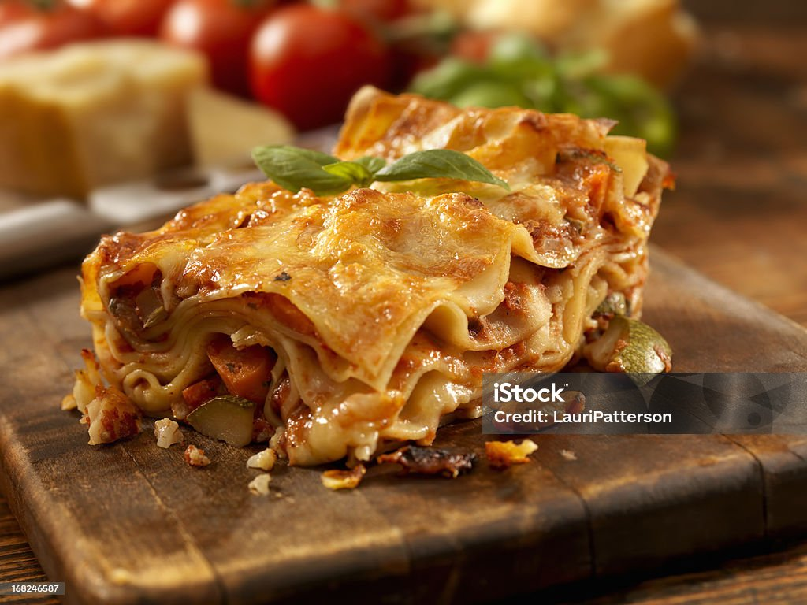

Lasagna Recipe

Description
This lasagna recipe takes a little work, but it is so satisfying and filling that it's worth it!
Ingredients
- 1 pound sweet Italian sausage
- 3/4 pound lean ground beef
- 1/2 cup minced onion
- 2 cloves garlic, crushed
- 1 can crushed tomatoes
- 2 cans canned tomato sauce
- 2 cans tomato past
- 1 cup of water
- 2 tablespoon white sugar
- 4 tablespoons chopped fresh parsley, divided
- 1 1/2 teaspoons sal, divided, or to taste
Steps
- Gather all your ingredients
- Cook sausage, ground beef, onion, and garlic in a Dutch oven over
medium heat until well browned
- Stir in crushed tomatoes, tomato sauce, tomato paste, and water.
Season with sugar, 2 tablespoons parsley, basil,
1 teaspoon salt, Italian seasoning, fennel seeds, and pepper. Simmer, covered, for about 1 ½ hours, stirring occasionally.
- Bring a large pot of lightly salted water to a boil. Cook lasagna noodles in boiling water for 8 to 10 minutes. Drain noodles, and rinse with cold water.